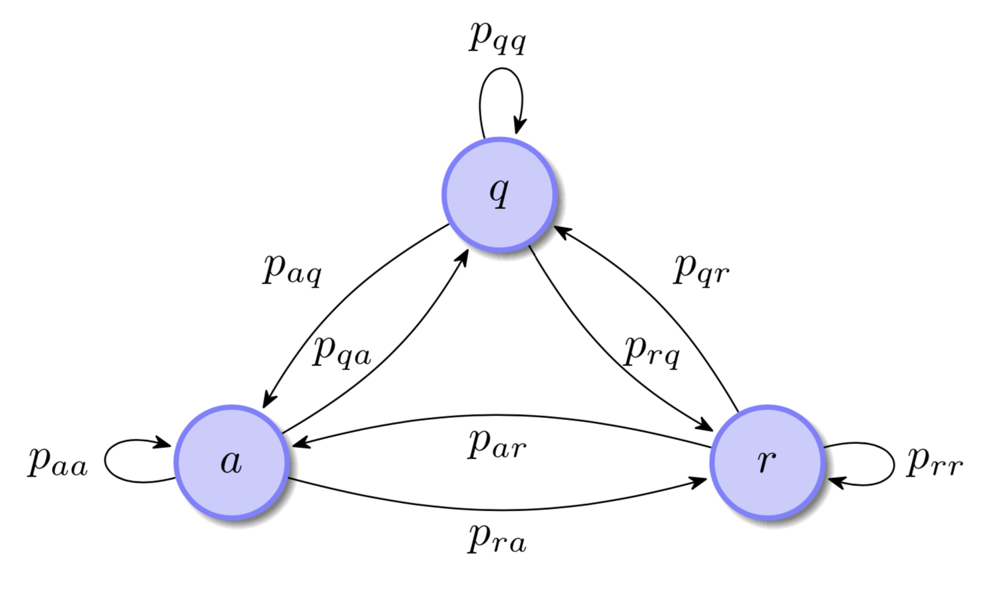
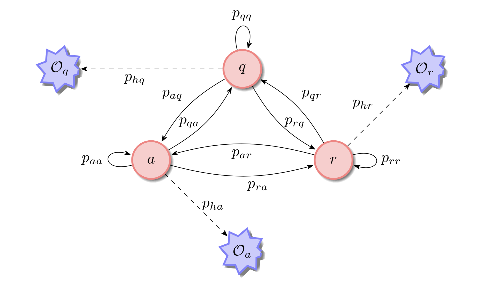
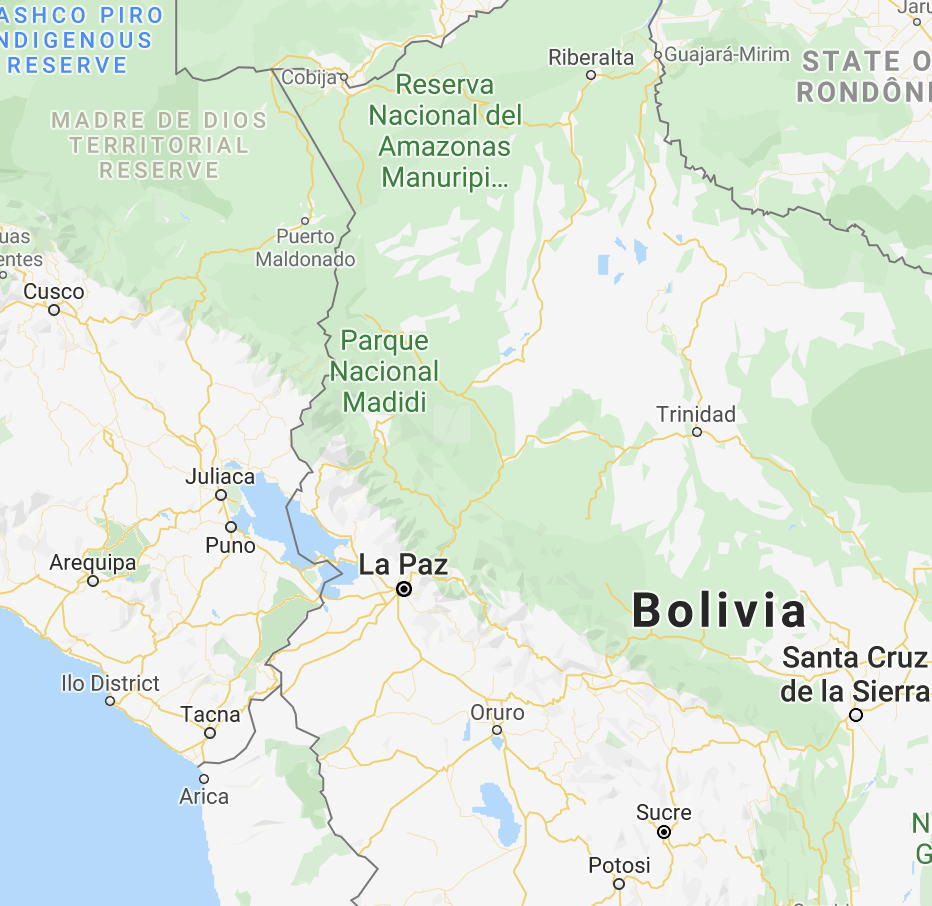
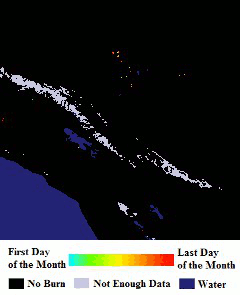
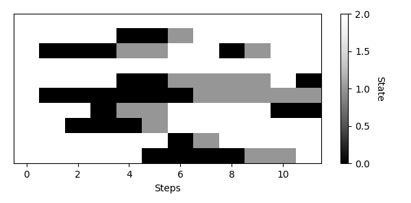

Our project is inspired by the idea that one can relate forest fires to neuronal spikes as a process transitioning between three states:
“ Our goal is to use a unified hidden Markov model (HMM) to classify the behaviors exhibited by both neuronal activity and forest fire spread. In particular, we are interested in inferring the systems’ switches between critical states. We aim to use satellite and remote sensed images of forest fires as well as images of neuronal activity obtained via in-vivo two-photon calcium imaging. ”
When Jack Cowan, a neuroscience researcher at the University of Chicago came up with the relationship between forests fires and neuronal spikes, he must have been reading the works of Per Bak on self-organized criticality.
This unintuitive connection between two disparate phenomena, neuronal spiking and forest fires, might be hidden in the dynamics of the tiny particles that compose matter.
About 30 ya, Per Bak, a Danish theoretical physicist, came up with the idea of dynamical systems naturally evolving to a critical state.
Self-organized criticality is the process in which the behavior of extended dissipative systems assumes a critical steady state independent of the initial state and without tuning of parameters to a special value.
Let $X_n$ be a discrete random variable defined on the finite state space $\{a, r, q\}$ such that the probability to transition from any state $i$ to a new state $j$ is $P(X_{n+1} = j\ | \ X_n = i) = p_{ji}$.
A hidden Markov model is a discrete-time finite state homogeneous Markov chain observed through a discrete-time channel characterized by a finite set of transition densities that are indexed by the states of the Markov chain.
The underlying process is not observable and referred to as the regime. The second process is a sequence of independent random variables that are conditional on the underlying Markov chain.
The value obtained from the distribution of each random variable depends on the Markov chain at that time. They form the observation sequence (Ephraim and Merhav, 2002).
Given an observation sequence $\{\mathcal{O}\}_{n=0}^{T-1}$, the number of states we wish to describe $N = 3$, and a number $M$ of observed symbols (from our image data), we wish to find the model $\lambda = (P, B, \pi)$ that maximizes the likelihood of the given observation sequence.
Somewhere in the West Amazon in 2018
NASA's Terra satellite flies by
The image data will be used for training and validation on our model. They are processed as follows:
Initial Pre-chosen Values:
$$\pi = \begin{pmatrix}0.005\\0.005\\0.990\end{pmatrix}, \ P = \begin{pmatrix}0.50 & 0.01 & 0.09\\0.25 & 0.90 & 0.01\\0.25 & 0.09 & 0.90\end{pmatrix},$$
class Node():
def __init__(self, initial_distribution, transition_matrix):
self.initial_distribution = initial_distribution
self.transition_matrix = transition_matrix
self.state = self._sample_state(self.initial_distribution)
def transition(self):
distribution = self.transition_matrix[:, self.state]
self.state = self._sample_state(distribution)
def _sample_state(self, distribution):
arq = np.random.sample(1)
if arq <= distribution[0]:
state = 0
elif arq <= distribution[0] + distribution[1]:
state = 1
else:
state = 2
return state
We trained the forest model’s parameters on a small NASA MODIS Image dataset using our HMM implementation.
The algorithm was used to optimize the transition matrix, initial state distribution, and state-conditional observation distributions which converged to the following:
$$\pi = \begin{pmatrix}0.0\\0.0\\1.0\end{pmatrix}, \ P = \begin{pmatrix}0.667 & 0.000 & 0.200\\0.333 & 0.667 & 0.000\\0.000 & 0.333 & 0.800\end{pmatrix},$$Using these parameters, we generated ten single-node simulations each over 12 time steps:
